Изначально все крысы разделяются по типу телосложения и типу шерстного покрова.
Под окрасом подразумевается непосредственно цвет шерсти крысы (ее окрашенных участков). Все крысы, за исключением сфинксов (бесшерстных крыс), входят в одну из секций, различающихся цветом шерсти.
Также существуют нестандартизированные разновидности, окрасы и маркировки, не признанные на данный момент.
На данной странице Вы можете увидеть наиболее популярные разновидности декоративных крыс, которые выделяют в народе.
Подробнее о маркированных окрасах крыс можно прочитать здесь.
Стандарт.Самый распространенный тип декоративных крыс, являющийся родоначальником других типов. Отличается уплотнённым и удлинённым телом, гладким шерстяным покровом, небольшими прямыми ушками и длинным хвостом, покрытым редкими шерстинками.
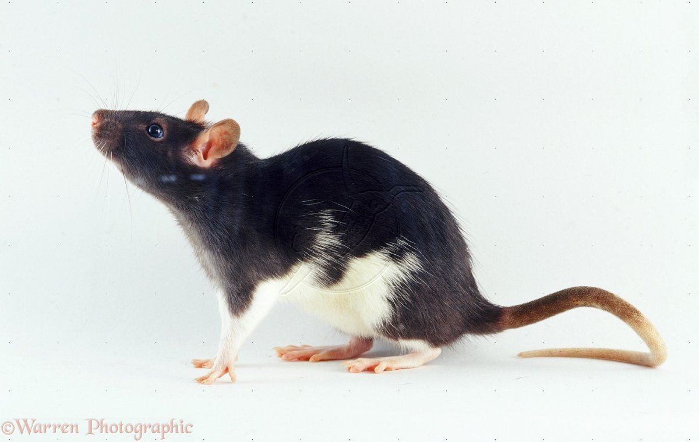
Манкс.У крыс данной породы полностью отсутствует хвост. Шерстка слегка волнистая, слегка укороченная на морде. Манксы обладают привлекательной внешностью, но не пользуются популярностью у заводчиков из-за слабого здоровья. Пушистики без хвоста склонны к развитию заболеваний мочеполовой системы и опорно-двигательного аппарата.
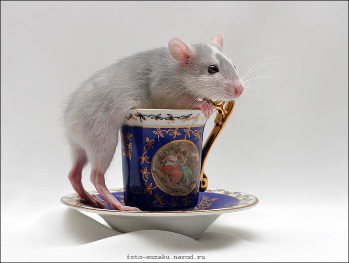
Дамбо.Отличается симпатичным и своеобразным внешним видом. Благодаря наличию сравнительно больших и оттопыренных ушей, мордочка грызуна имеет весьма забавный вид. Свое название крысенок получил из-за этих оттопыренных ушей, что весьма схоже с ушами одноименного слоненка Дамбо, придуманного диснеевскими режиссерами.
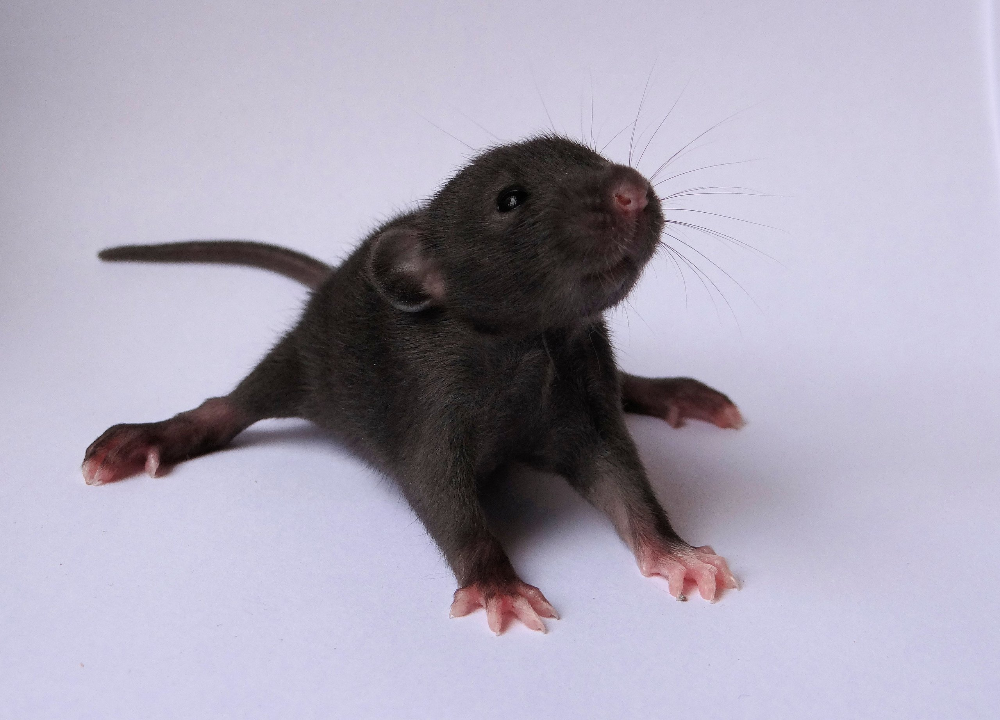
Хаски. Это декоративный вид, имеющий разнообразный цвет шерстяного покрова. Чаще всего можно встретить особей бело-серого цвета. При рождении данные зверьки в основном имеют белоснежную шерстку, но со временем расцветка меняется. Еще одна особенность данной породы – цвет глаз. Если у стандартных крыс он черный, то у Хаски могут быть глазки всех оттенков красного цвета.
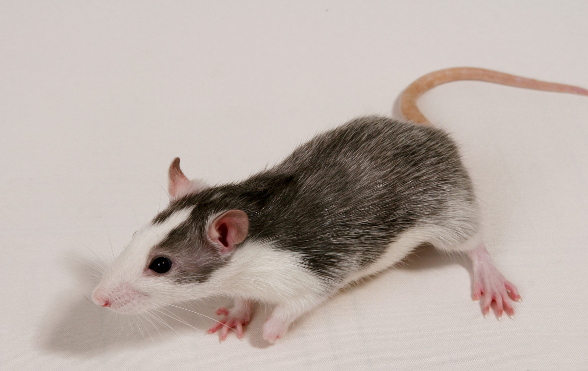
Рекс. Не менее популярная разновидность домашнего грызуна. Характерная особенность животного заключается в том, что у этой крысы волнистая шерсть. Из-за этой особенности животное больше напоминает живую плюшевую игрушку.
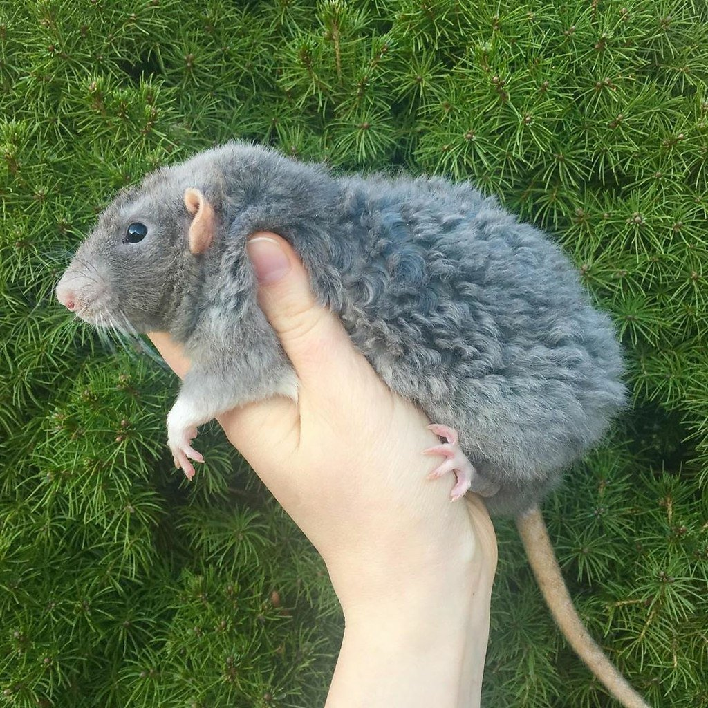
Сиамская.Внешне схожа с кошками одноименной породы. Основная часть шерстяного покрова светло-бежевая. На мордочке (вокруг носа) и лапках имеются затемнения. Только в отличие от семейства кошачьих, сиамские крысы вполне дружелюбны и не злопамятны.
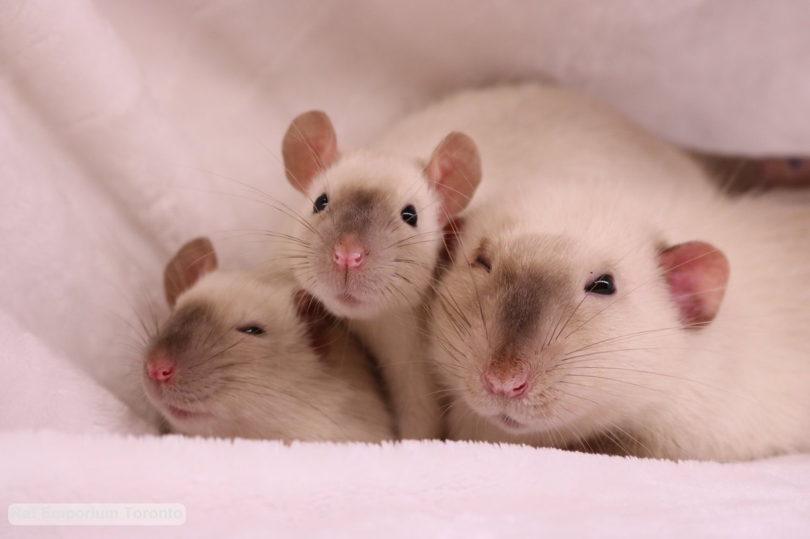
Сатиновые.Большой популярностью эта порода пользуется у владельцев европейских стран. Отличается уникальной, блестящей, напоминающей атлас, шерстью. Эта уникальность и является определяющей, способствующей большой востребованности животного.
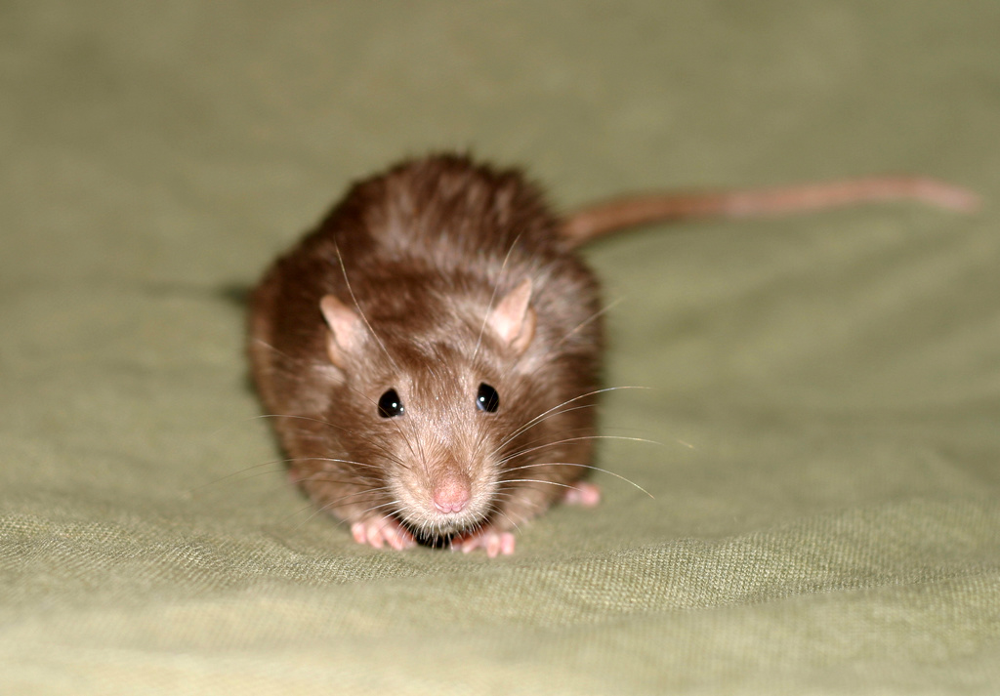
Сфинкс.Породу действительно можно считать уникальной, поскольку животное не имеет шерстяного покрова, за исключением редких шерстинок, покрывающих верхнюю часть тела. У грызунов складчатая кожа, бледно-розового оттенка, что придает животному некоторую нежность. Эта рановидность крыс больше для любителей, ведь не каждый готов содержать у себя дома такое специфическое животное.
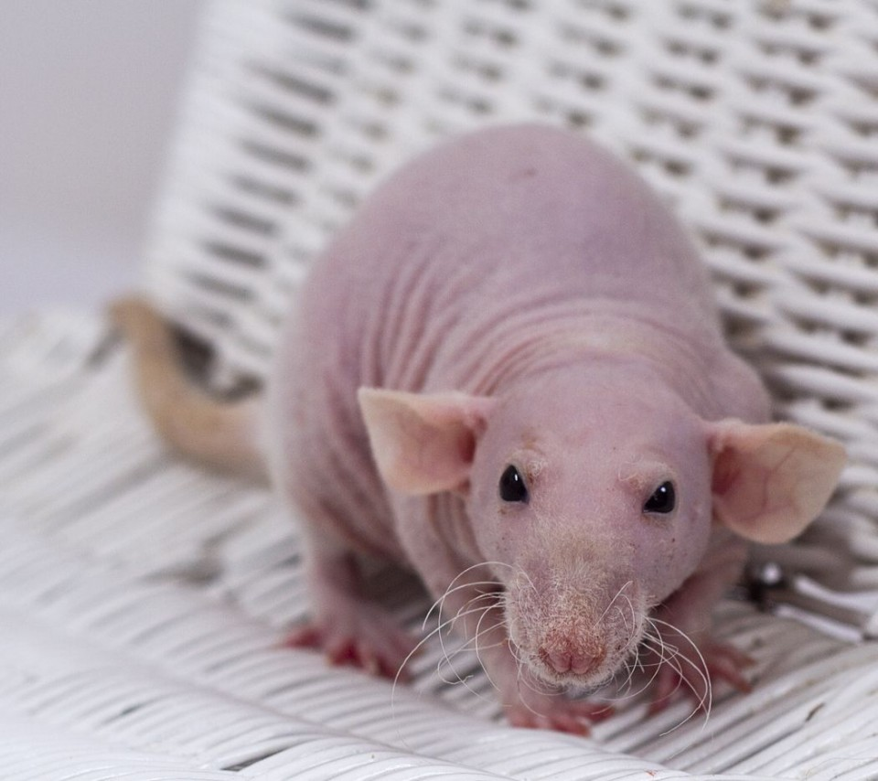
Агути.Большинство крыс агути имеют шоколадный или темно-серый окрас. При этом живот покрыт серебристым мехом. Кончики шерсти – черные. Это природный окрас крыс.
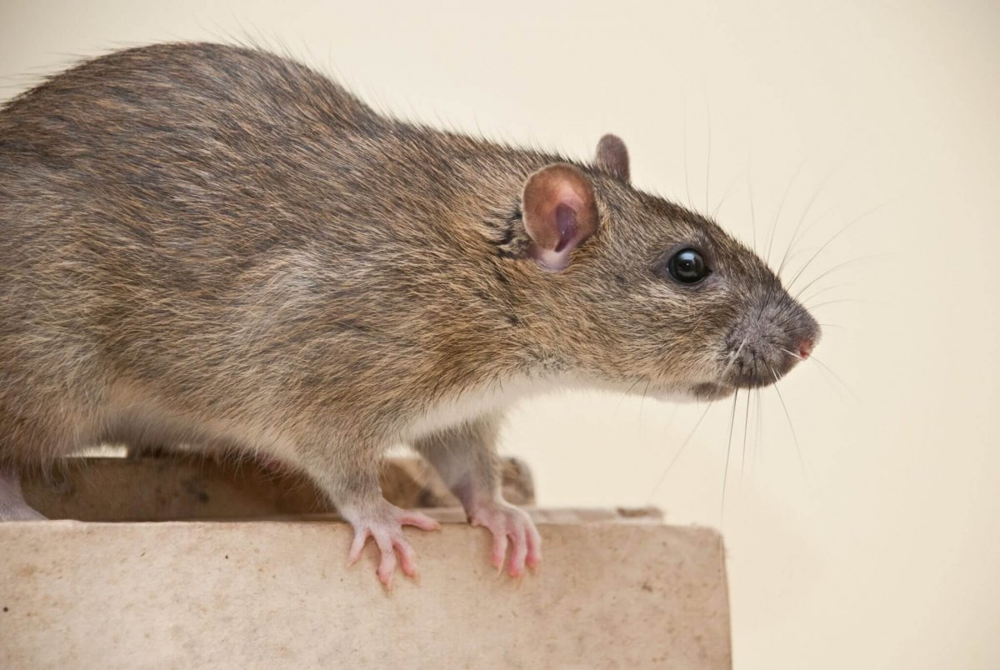
Селф.Обладают одинаковой расцветкой по всему телу. Зверьки бывают голубого, белого, чёрного и дымчатого цветов.
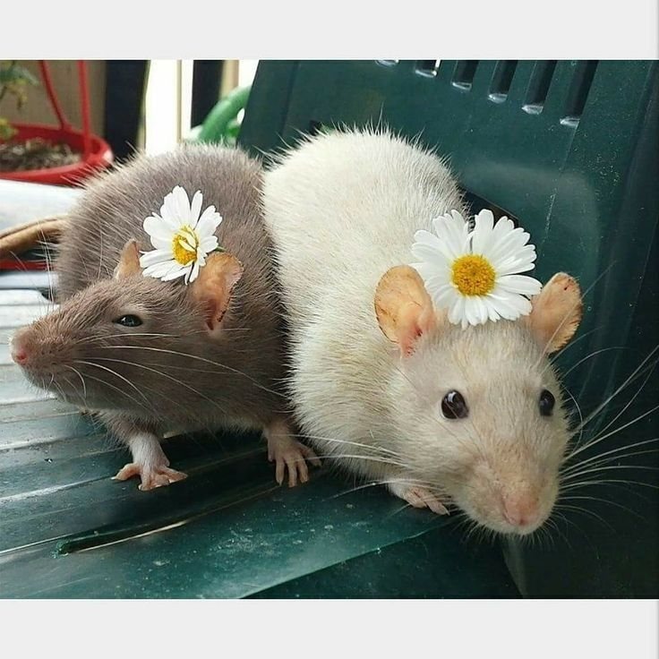
Альбинос.Отличительная черта крыс-альбиносов – чисто-белая блестящая шерсть, равномерно покрывающая все тело. Глаза – розовые. Альбиносы отличаются любознательностью и высокими когнитивными способностями, поддаются дрессировке.
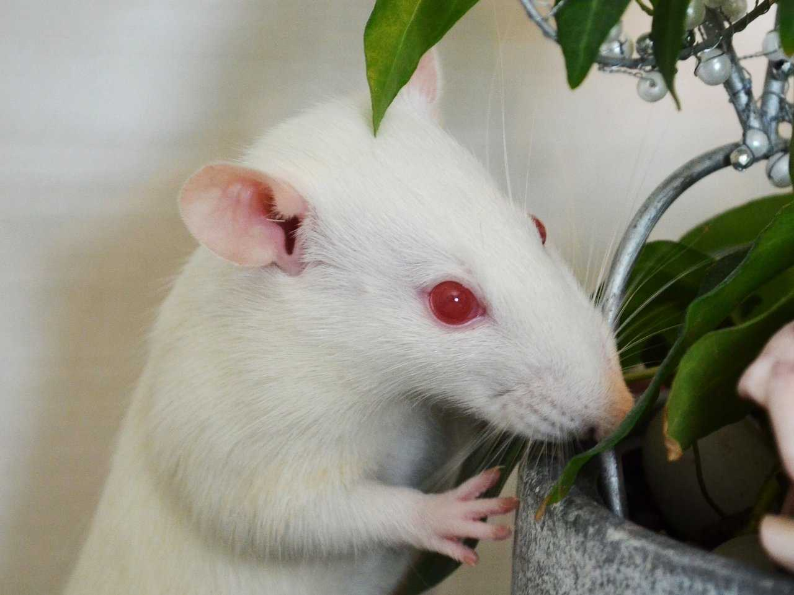